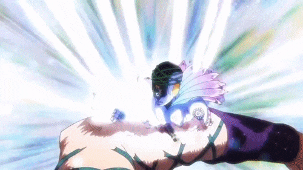

Killer Queen es un Stand de corto alcance con apariencia humanoide y un diseño felino. Su habilidad principal es convertir cualquier objeto que toca en una bomba, explotándovlo sin dejar rastro.
También posee técnicas secundarias muy peligrosas, como Sheer Heart Attack y Bites the Dust, que lo vuelven uno de los Stands más letales y precisos de toda la serie.
Made in Heaven es un Stand de velocidad extrema capaz de acelerar el flujo del tiempo a escala universal. Su poder permite reiniciar el universo, dándole a su usuario una ventaja abrumadora. Su diseño estilizado y su velocidad casi absoluta lo convierten en uno de los Stands más poderosos y únicos del mundo de JoJo’s. ㅤㅤㅤㅤㅤㅤㅤㅤㅤㅤㅤㅤㅤㅤㅤㅤㅤㅤㅤㅤㅤㅤㅤㅤㅤㅤㅤㅤㅤㅤㅤㅤㅤㅤㅤㅤㅤㅤㅤㅤㅤㅤㅤㅤㅤㅤes el Stand final de Enrico Pucci en JoJo’s Bizarre Adventure: Stone Ocean y representa el control absoluto del tiempo. Su habilidad acelera progresivamente el flujo temporal del universo, afectando a todos los seres vivos excepto a su usuario, lo que le otorga una ventaja abrumadora en combate.
.gif)